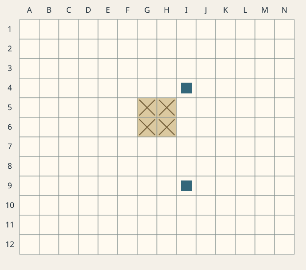

Одинаковые правила, разная история
Все карты совпадают с сеткой нативного пакета: 14 × 12, клетка — 5 футов. G5/H5/G6/H6 — трудная местность; I4/I9 — половинное укрытие. Остальные детали описания декоративны, пока ведущий не изменил поле штатно.
Расстановка и параметры
Герои в порядке списка встречи: B3, B4, B5, B6, C3, C4, C5, C6. Противники: L3, L4, L5, L6, M3, M4. Используйте только нужное число фигур.
Для 3 / 4 / 5 / 6 / 7 / 8 игроков: 2 / 3 / 3 / 4 / 5 / 6 противников, здоровье каждого 12 / 14 / 16 / 18 / 20 / 22. Защита 12; скорость 20 футов; одна ближняя атака +3, 1d4+1 дробящего урона, досягаемость 5 футов.
Перед запуском встречи герои должны находиться в её локации. После сыгранного перехода ведущий перемещает участвующих персонажей обычным действием приложения; герои в других местах автоматически в бой не попадают.
Враги — простая поддерживаемая модель. Мирные решения и ограничения сцены описаны отдельно; ведущий подтверждает их результат. После первого раунда напомните пути переговоров или отступления. Встречи не запускаются автоматически.
Учебные стойки у выхода
Только если после предупреждения группа выбирает силой оттеснить заранее видимые учебные чучела и DM явно начинает обычное столкновение. Крен может убрать их сам; разговор или обход не запускает бой.
Цель и выходы
Добраться до наружной петли малой рамы, освободив место для работы. Победа не требует уничтожить чучела; после раскрытия рамы или отхода через боковую калитку бой можно закончить по решению DM.
Попросить Крена убрать стойки, раскрыть боковую калитку, перенести лестницу к чердаку или обойти раму по крыше со страховкой. Отказ от боя не скрывает ни табличку, ни сведения о петле. Отступление к скамьям всегда открыто.
Поведение противников
Оживлённый школьный манекен на коротких деревянных ногах, с мягкими тренировочными лапами. Это обычный поддерживаемый противник в сказочном облике, не разумный фамильяр и не новый боевой класс.
Стойки занимают широкий подход, используют только одну обычную ближнюю атаку +3 на 1d4+1 и не преследуют покинувших двор. Никаких захватов, особых реакций, дополнительных ходов спутников или автоматического проталкивания через шов.
Размер группы
3 игрока: 2 стойки по 12 HP; 4: 3 по 14; 5: 3 по 16; 6: 4 по 18; 7: 5 по 20; 8: 6 по 22. У всех AC 12, одна ближняя атака +3, урон 1d4+1. Большому столу дайте два подхода к одной наружной петле; малому — широкий боковой обход без отдельного противника.


Сетка 14×12. В центре, клетки x6–9/y5–8, лежат труднопроходимые учебные маты. Скамьи у x3/y4 и x11/y9 дают укрытие. Рама стоит у северного края, боковая калитка открывается на западе; чучела не занимают её. Шов обозначается визуально и не действует как новое автоматическое правило боя.
Чучела у колышков
Только если Круча после разговора решает удерживать свой пост, герои выбирают силовое освобождение и DM объявляет обычное столкновение. При отзыве поста или открытом боковом лазе бой не нужен.
Цель и выходы
Обеспечить доступ к наружным колышкам и вывести желающих из полотняной галереи. Можно удержать свободный проход и отойти всей группой; захват или наказание Кручи не являются условием успеха.
Показать Круче работающий обход, дать ему самому открыть сеть, получить помощь Шеллы либо поднять свободный край тента снаружи. Если герои отступят, Круча слышит предложение обменять оставленное имущество на немедленное открытие прохода; человека или фамильяра нельзя требовать в залог.
Поведение противников
Заранее выставленный учебный манекен с мягкой набивкой и полосатой тканью. Круча остаётся говорящим NPC; этот профиль не добавляет ему неуязвимость или особые способности.
Манекены прикрывают колышки обычными перемещениями и ближними атаками. Не превращают сети в автоматические захваты, не атакуют беспомощных и не преследуют группу за боковым выходом. Отдельные спасательные действия разрешает DM в рамках существующих правил.
Размер группы
Для 3/4/5/6/7/8 игроков соответственно 2/3/3/4/5/6 чучел и 12/14/16/18/20/22 HP у каждого. AC 12; одна ближняя атака +3 на 1d4+1. При 6–8 местах два колышка доступны с разных сторон, при 3–5 достаточно снять один угол; это описание задачи, не новая система очков.

Сетка 14×12. Складки тента образуют центральную труднопроходимую область x5–9/y4–8. Корзины у x2/y5 и x12/y7 дают укрытие. Наружные колышки видны у северного края, западный боковой лаз ведёт наружу; отступление на юг свободно.
Последний пост у рамы
Только если большая рама ещё действует, Крен сознательно продолжает блокаду и игроки выбирают бой после ясного описания обхода, разговора и отступления. Ранняя остановка Крена не вызывает новых чучел или запасной рамы.
Цель и выходы
Открыть подход к наружной подпорке или провести всех желающих по внешнему обходу. Уничтожение каждого противника не требуется. После снятия рамы и вывода группы Крен решает, отойти ли самому; его нельзя объявлять побеждённым заранее.
Провести желающих по обходу, опустить пустую раму снаружи после предупреждения, предложить Крену самому освободить путь или договориться с помощниками не удерживать несогласных. Любой участник может отойти на верхнюю террасу; его отклик не прекращается от расстояния.
Поведение противников
Полевой манекен, стоящий на виду у опоры. Его мягкие лапы и деревянные ноги используют тот же обычный профиль; никакого заклинания разрыва у него нет.
Чучела держатся около опоры, не сбрасывают никого с края и не проталкивают персонажей через шов автоматически. Используют только стандартную ближнюю атаку. Снятие подпорки, удержание створки и общее отступление — объявленные действия с решением DM, не скрытые таймеры.
Размер группы
3 игрока: 2 чучела, 12 HP; 4: 3, 14 HP; 5: 3, 16 HP; 6: 4, 18 HP; 7: 5, 20 HP; 8: 6, 22 HP. Всегда AC 12, одна атака +3 на 1d4+1. Дайте каждому месту функцию: движение, страховка, опора, переговоры или помощь выходящему; не добавляйте обязательные цели ради больших групп.

Сетка 14×12. Центральная осыпь x6–9/y5–8 труднопроходима; плоские камни у x3/y4 и x11/y9 дают укрытие. Рама стоит у северного прохода, внешний обход идёт по западной стороне, безопасная общая терраса занимает южный край. Обрыв обозначает недоступную область, а не автоматическую смертельную ловушку.